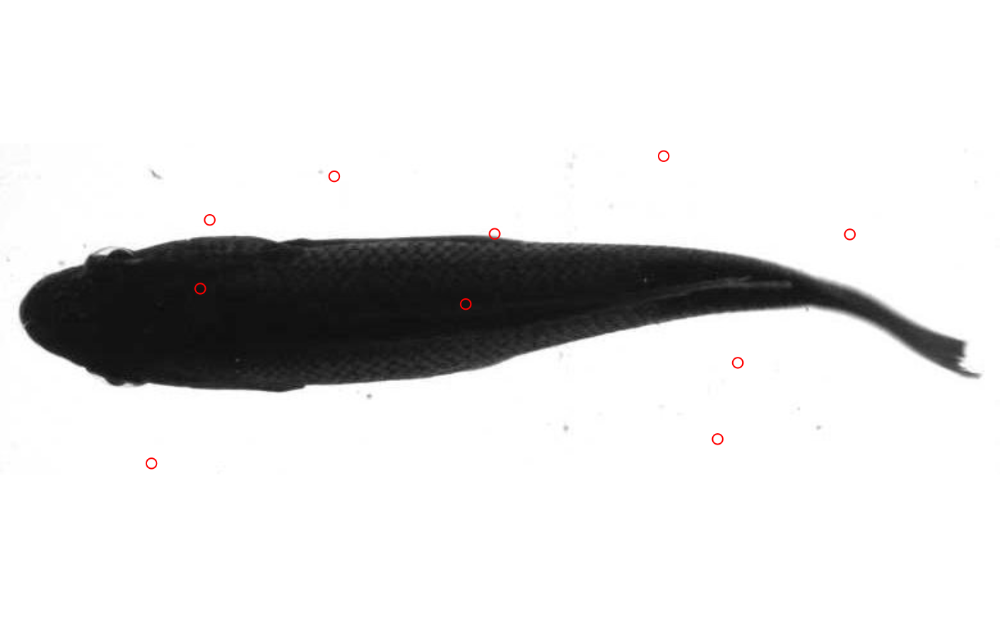

data.overlay.RdSimple wrapper for points to plot data derived from an image over that image.
data.overlay(img, over, ...)
| img | character, an image file path. |
|---|---|
| over | a data frame, data table, or matrix with two columns, the first representing x and the second y coordinates. |
| ... | other arguments to be passed to |
The image is plotted in the graphics device with points given in x
Simply plots 2D dimensional data over the image specified in img. May be useful in plotting output from trackter's kin functions.
f <-system.file("extdata/img", "sunfish_BCF.jpg", package = "trackter") d <- dim(EBImage::readImage(f)) x <- runif(10,1,d[1]) y <- runif(10,1,d[2]) pts <- cbind(x,y) data.overlay(img=f,over=pts,col="red",type="p")